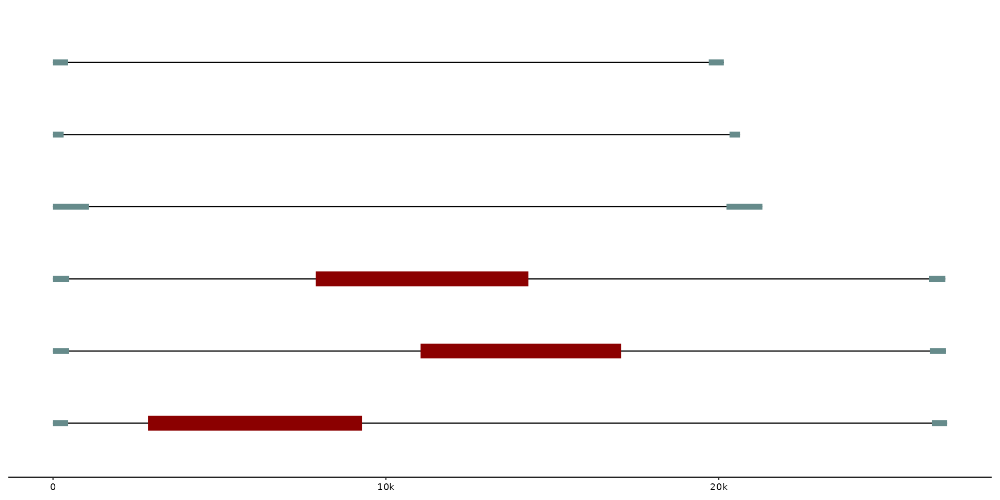
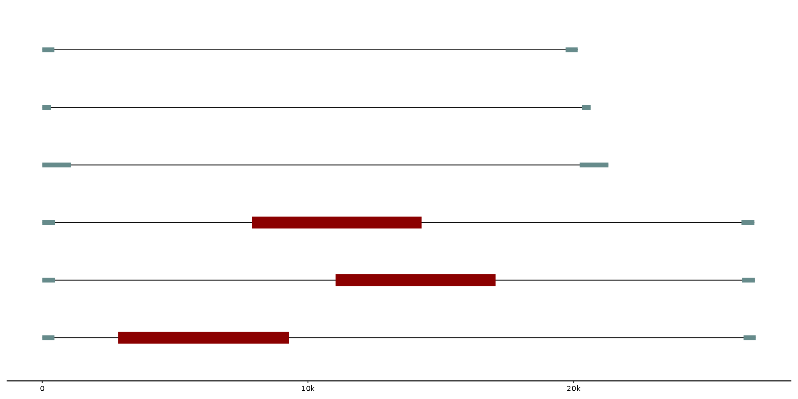

geom_feat() allows the user to draw (additional) features to the plot/graph.
For example, specific regions within a sequence (e.g. transposons, introns, mutation hotspots)
can be highlighted by color, size, etc..
Usage
geom_feat(
mapping = NULL,
data = feats(),
stat = "identity",
position = "pile",
na.rm = FALSE,
show.legend = NA,
inherit.aes = TRUE,
...
)Arguments
- mapping
Set of aesthetic mappings created by
aes(). If specified andinherit.aes = TRUE(the default), it is combined with the default mapping at the top level of the plot. You must supplymappingif there is no plot mapping.- data
feat_layout: Uses first data frame stored in the
featstrack by default.- stat
The statistical transformation to use on the data for this layer. When using a
geom_*()function to construct a layer, thestatargument can be used the override the default coupling between geoms and stats. Thestatargument accepts the following:A
Statggproto subclass, for exampleStatCount.A string naming the stat. To give the stat as a string, strip the function name of the
stat_prefix. For example, to usestat_count(), give the stat as"count".For more information and other ways to specify the stat, see the layer stat documentation.
- position
describes how the position of different plotted features are adjusted. By default it uses
"pile", but different ggplot2 position adjustments, such as"identityor"jitter"can be used as well.- na.rm
If
FALSE, the default, missing values are removed with a warning. IfTRUE, missing values are silently removed.- show.legend
logical. Should this layer be included in the legends?
NA, the default, includes if any aesthetics are mapped.FALSEnever includes, andTRUEalways includes. It can also be a named logical vector to finely select the aesthetics to display.- inherit.aes
If
FALSE, overrides the default aesthetics, rather than combining with them. This is most useful for helper functions that define both data and aesthetics and shouldn't inherit behaviour from the default plot specification, e.g.borders().- ...
Other arguments passed on to
layer()'sparamsargument. These arguments broadly fall into one of 4 categories below. Notably, further arguments to thepositionargument, or aesthetics that are required can not be passed through.... Unknown arguments that are not part of the 4 categories below are ignored.Static aesthetics that are not mapped to a scale, but are at a fixed value and apply to the layer as a whole. For example,
colour = "red"orlinewidth = 3. The geom's documentation has an Aesthetics section that lists the available options. The 'required' aesthetics cannot be passed on to theparams. Please note that while passing unmapped aesthetics as vectors is technically possible, the order and required length is not guaranteed to be parallel to the input data.When constructing a layer using a
stat_*()function, the...argument can be used to pass on parameters to thegeompart of the layer. An example of this isstat_density(geom = "area", outline.type = "both"). The geom's documentation lists which parameters it can accept.Inversely, when constructing a layer using a
geom_*()function, the...argument can be used to pass on parameters to thestatpart of the layer. An example of this isgeom_area(stat = "density", adjust = 0.5). The stat's documentation lists which parameters it can accept.The
key_glyphargument oflayer()may also be passed on through.... This can be one of the functions described as key glyphs, to change the display of the layer in the legend.
Details
geom_feat uses ggplot2::geom_segment under the hood. As a result,
different aesthetics such as alpha, linewidth, color, etc.
can be called upon to modify the visualization of the data.
By default, the function uses the first feature track.
Examples
# Plotting data from the feats' track with adjusted linewidth and color
gggenomes(seqs = emale_seqs, feats = emale_ngaros) +
geom_seq() +
geom_feat(linewidth = 5, color = "darkred")
 # Geom_feat can be called several times as well, when specified what data should be used
gggenomes(seqs = emale_seqs, feats = list(emale_ngaros, emale_tirs)) +
geom_seq() +
geom_feat(linewidth = 5, color = "darkred") + # uses first feature track
geom_feat(data = feats(emale_tirs))

# Additional notes to feats can be added with functions such as: geom_feat_note / geom_feat_text
gggenomes(seqs = emale_seqs, feats = list(emale_ngaros, emale_tirs)) +
geom_seq() +
geom_feat(color = "darkred") +
geom_feat(data = feats(emale_tirs), color = "darkblue") +
geom_feat_note(data = feats(emale_ngaros), label = "repeat region", size = 4)
# Geom_feat can be called several times as well, when specified what data should be used
gggenomes(seqs = emale_seqs, feats = list(emale_ngaros, emale_tirs)) +
geom_seq() +
geom_feat(linewidth = 5, color = "darkred") + # uses first feature track
geom_feat(data = feats(emale_tirs))

# Additional notes to feats can be added with functions such as: geom_feat_note / geom_feat_text
gggenomes(seqs = emale_seqs, feats = list(emale_ngaros, emale_tirs)) +
geom_seq() +
geom_feat(color = "darkred") +
geom_feat(data = feats(emale_tirs), color = "darkblue") +
geom_feat_note(data = feats(emale_ngaros), label = "repeat region", size = 4)
 # Different position adjustments with a simple dataset
exampledata <- tibble::tibble(
seq_id = c(rep("A", 3), rep("B", 3), rep("C", 3)),
start = c(0, 30, 15, 40, 80, 20, 30, 50, 70),
end = c(30, 90, 60, 60, 100, 80, 60, 90, 120)
)
gggenomes(feats = exampledata) +
geom_feat(position = "identity", alpha = 0.5, linewidth = 0.5) +
geom_bin_label()
#> No seqs provided, inferring seqs from feats
# Different position adjustments with a simple dataset
exampledata <- tibble::tibble(
seq_id = c(rep("A", 3), rep("B", 3), rep("C", 3)),
start = c(0, 30, 15, 40, 80, 20, 30, 50, 70),
end = c(30, 90, 60, 60, 100, 80, 60, 90, 120)
)
gggenomes(feats = exampledata) +
geom_feat(position = "identity", alpha = 0.5, linewidth = 0.5) +
geom_bin_label()
#> No seqs provided, inferring seqs from feats